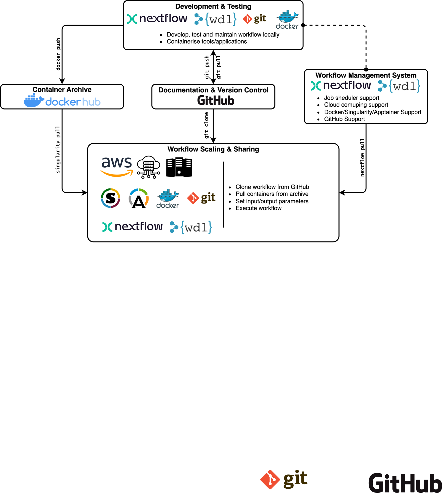
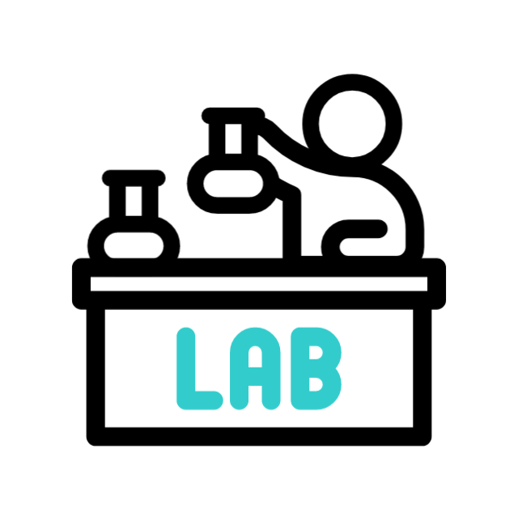

Bioinformatics: Turning Coffee into Code
by Phelelani Mpangase
Sydney Brenner Institute for Molecular Bioscience | Biomedical Informatics and Translational Science
Faculty of Health Sciences
University of the Witwatersrand
2025/2026 Bioinf Portfolio
Projects & Consultations
- Multimorbidity in Africa: Digital innovation, visualisation and application (MADIVA)
- Wits University | Scott Hazelhurst
- Deciphering Developmental Disorders in Africa
(DDD-Africa) - Wits University | Zane Lombard
- COVD-19 Study
- University of Cape Town | Jonathan Peters
- Biological pathways from HEAT exposure (BioHeat)
- Wits University | Matthew Chersich
- Cancer Genetics
- Wits University | Carl Chen & Chris Mathews
- HIV WGS
- Wits University | Caroline Tiemessen
- Genetics of Idiopathic Dilated Cardiomayopathy (IDCM)
- Wits University | Nqoba Thabedze
- Base Quality Score Recalibration (BQSR) Project
- Wits University | Scott Hazelhurst
- Pancreatic Cancer Study
- Wits University | Ekene Nweke
- Galbladder Cancer Study
- Wits University | Ekene Nweke
- Ovarian Cancer Study
- University | Fiona Baine-Savanhu
- Autosomal Recessive Disorders Study
- Wits University | Didi Tsitsi
- MSMEG Assembly
- Wits University | Edith Machowski
Best Practices for Reproducible Scientific Workflows

Teaching
- eLwazi Variant Calling Workshop 2025 - Online
- 11 February to 1 April (Tuesdays & Wednesdays)
- AfriGen-D's Introduction to Bioinformatics Techniques (IBT_2025) - Online
- 29 April to 10 July (Tuesday & Thursdays)
- eLwazi Reproducible Science Seminar Series - Online
- 28 May
- Graduate Entry Medical Programme (GEMPII) 2025 - Wits University
- 23 June
- GA4GH Standards Technical Integration Hackathon - Cape Town
- 27 July to 01 August
- MSc Genomics Medicine: Next Generation Sequencing: Data, Formats & Visualisation - Wits University
- 3 November
- MSc Genomics Medicine: Polygenic [Risk] Scores: The Basics - Wits University
- 19 May
- eLwazi Reproducible Science - Cape Town
- 24 to 28 November 2025
Supervision & Mentorship
- Nhlamulo Khoza (PhD Human Genetics | 2024 - Current)
- Risk Predictive Modelling of Cardiometabolic Multimorbidities in African Populations using Polygenic Scores
- Phophi Mmbi (PhD Human Genetics | 2024 - Current)
- Multiomic Approach for Early Detection of Oesophageal Squamous Cell Cancer in South Africa
- Gabriella Peta Pillhofer (PhD Human Genetics | 2025 - Current)
- Developing a long-read sequencing workflow to detect germline variants in paediatric central nervous system cancers
- Teagan Lobb (MSc Genomic Medicine | 2025)
- Extracting breast cancer tumour signatures from RNA-Seq data from Black South African females to gain prognostic value
- Minenhle Mayisela (Research Fellow)
- Genetics of Idiopathic Dilated Cardiomyopathy
- Jane/Joe Doe (MSc Genomic Medicine | 2026)
- Variant Filtering Automation: A quality and annotation guided tool for prioritising variants from Next Generation Sequencing (NGS) data

Academic & Research
Development
- ISCB Africa ASBCB 2025 Conference - Cape Town
- 14 April - 17 April
- Internal/External Examination
- PLAN AND STRATEGISE:
- Own Research Questions
- Own Funding
- Publish (first/last author)
- Paid Training Workshop
- Attend Conferences
Professional Development
- Biomedical Innovation and Entrepreneurship Training Course - Wits University
- 03 February - 07 February
- PLAN AND STRATEGISE:
- Master of Business Administration in Healthcare Leadership - 2027